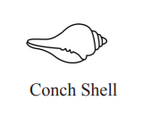
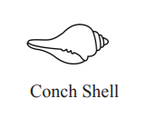

Political Status: Presidential Candidate, supported by Tamil political coalitions (ITAK, EPRLF)
Residency: Information not publicly available
Political Background and Career
Political Involvement: P. Ariyanethiran is a seasoned Tamil politician and a former Member of Parliament representing the Batticaloa District. He has been actively involved in Tamil political movements, particularly through the Tamil National Alliance (TNA), advocating for the rights of the Tamil minority.
Political Platform: His campaign centers on Tamil autonomy, self-determination, and human rights, particularly in the post-war Northern and Eastern provinces of Sri Lanka.
Key Focus Areas
Tamil Autonomy and Self-Determination: Ariyanethiran advocates for a federalist model where Tamil-majority regions have greater autonomy. He supports a referendum for self-governance under international supervision.
Land Rights: He calls for resolving land disputes in the Tamil regions, particularly regarding lands occupied by the military since the end of the civil war in 2009.
Human Rights and Accountability: Ariyanethiran seeks justice for Tamil victims of war crimes and human rights violations, advocating for international accountability mechanisms.
Federalism: He supports decentralized governance, pushing for more local control over education, law enforcement, and resource management in Tamil provinces.
Economic Development: His platform emphasizes rebuilding infrastructure and promoting economic development in war-affected Tamil regions, with a focus on providing opportunities for the youth.
Political Achievements
Parliamentary Representation: Ariyanethiran served as a Member of Parliament for the Batticaloa District, representing Tamil interests and advocating for the rights of his community at the national level.
Advocacy for Tamil Rights: He has been a consistent voice for Tamil self-determination and human rights, particularly in the Northern and Eastern provinces of Sri Lanka.
Challenges & Criticisms
National Reach: Ariyanethiran's candidacy is primarily focused on Tamil issues, which may limit his appeal to voters outside the Northern and Eastern provinces.
Limited Electoral Influence: Tamil parties have historically struggled to exert significant influence in national elections, given the dominance of Sinhalese-majority parties and demographic challenges.
Symbolic Candidacy: Some analysts view his campaign as more symbolic, aimed at raising awareness of Tamil grievances rather than securing a realistic path to the presidency.
2024 Political Prospects
Position in 2024 Elections: P. Ariyanethiran’s candidacy is a significant step toward ensuring that Tamil political aspirations are part of the national dialogue, though his chances of winning the presidency remain slim.
Personal & Family Life
Family: Information about his personal and family life is not widely available.
Visual and Symbolic Representation
Appearance: P. Ariyanethiran’s campaign symbol is the Conch Shell, a powerful cultural and spiritual symbol in South Asia that represents purity, truth, and justice. It resonates with his advocacy for Tamil rights and justice.
Color and Branding
Campaign Colors: The Conch Shell symbol holds significant meaning, emphasizing clarity, protection, and a call for justice, aligning with Ariyanethiran’s demands for Tamil autonomy and human rights.

 
